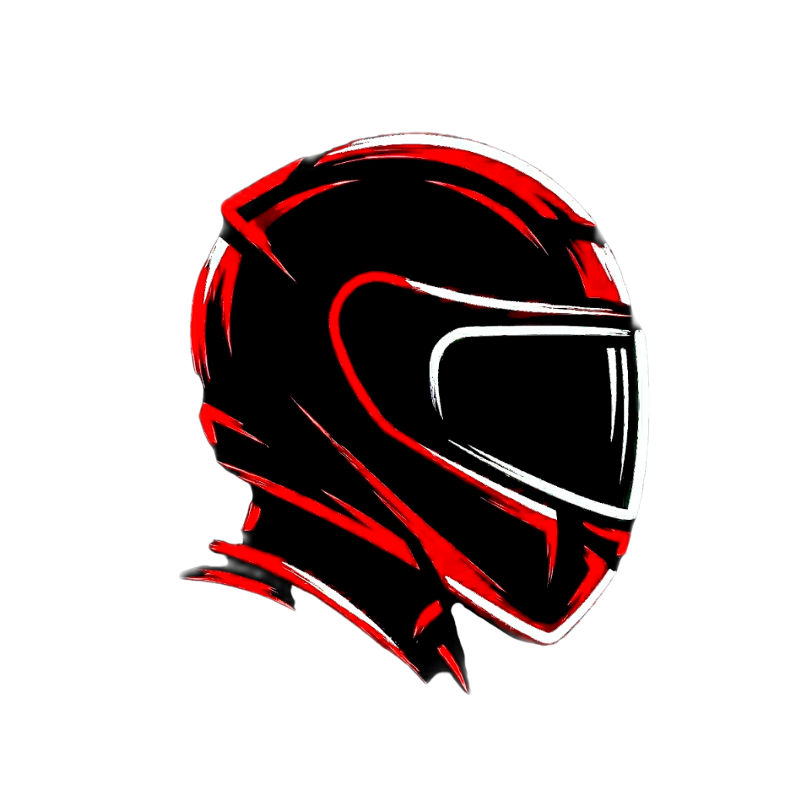
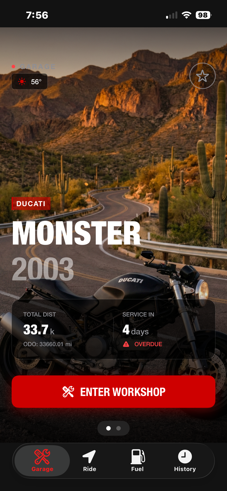
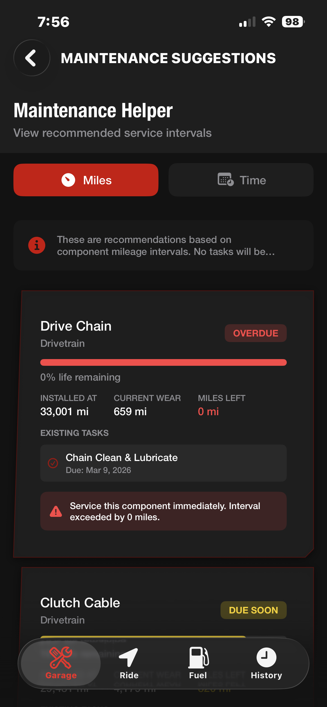
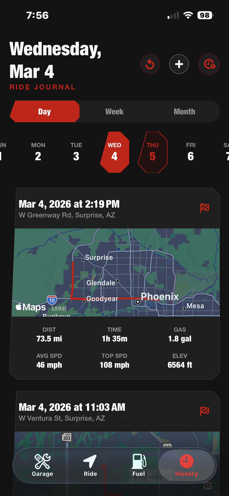
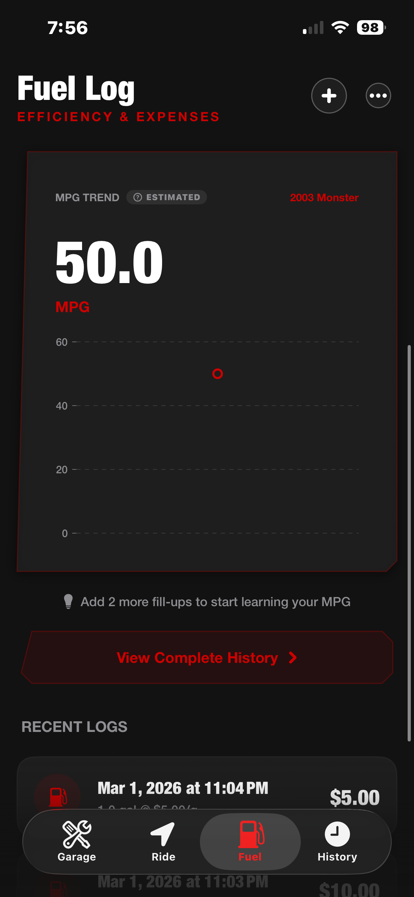

Loading...Drop the notebook. MotoLog RS is the digital garage for riders who take their bike seriously. Log every ride, track every service interval, and always know what's coming next — so you can focus on riding, not remembering.


Your bike deserves better than arbitrary service dates. Our dynamic maintenance engine calculates component wear in real-time based on your actual mileage. Get alerts before your tires are cooked or your chain snaps. Maximize performance, minimize downtime.
Turn your phone into a high-performance dash. Our Ride Tracker maps your exact routes, logging your total distance, top speed, lean angle, and elevation shifts. Your complete riding history, saved and searchable forever.


Stop guessing your range. Log your fill-ups in seconds or let our Premium AI scan your gasoline receipts. MotoLog RS's adaptive algorithm learns your real-world MPG to give you a fuel range prediction.
Join the riders already optimizing their garage. Download MotoLog RS now and unlock the full potential of your maintenance, fuel tracking, and rides.
Download NowFree to download. Requires iOS 17.0 or later.
Last Updated: March 1, 2026
By downloading, installing, or using MotoLog RS ("the App"), you agree to be bound by these Terms of Service. If you do not agree to these terms, do not use the App.
MotoLog RS is a motorcycle tracking and maintenance application that allows you to:
You agree to:
MotoLog RS records certain ride telemetry including top speed, average speed, lean angle, and acceleration as informational data for personal review purposes only. THIS DATA IS RECORDED FOR LOGGING AND ANALYTICAL PURPOSES SOLELY. BY USING THESE FEATURES, YOU EXPRESSLY ACKNOWLEDGE AND AGREE THAT:
PERFORMANCE METRICS — CLOSED-COURSE AND PERSONAL REVIEW USE ONLY: Performance data captured by the App — including but not limited to 0-60 MPH elapsed time, quarter-mile elapsed time, top speed, lean angle, and average speed — is provided exclusively as a historical personal record for private review and analysis. THIS DATA IS OF THE TYPE COMMONLY TRACKED IN CLOSED-COURSE MOTORSPORTS ENVIRONMENTS AND IS NOT INTENDED TO BE TARGETED, REPLICATED, OR PURSUED ON PUBLIC ROADS, IN TRAFFIC, OR IN ANY ENVIRONMENT GOVERNED BY APPLICABLE TRAFFIC LAW.
The existence of these metrics within the App does not constitute authorization, encouragement, or invitation to replicate any recorded performance value in any context. Any decision to use App data as motivation, benchmark, or goal — on a public road or otherwise — is made entirely at your own volition without any legal responsibility attaching to MotoLog RS. MotoLog RS expressly disclaims any intent that these features be used in a manner that violates any federal, state, or local traffic law, and shall bear no liability under any legal theory for any consequence arising from your decision to do so.
THE APP IS PROVIDED "AS IS" WITHOUT WARRANTIES OF ANY KIND, EXPRESS OR IMPLIED. WE DO NOT WARRANT THAT THE APP WILL BE UNINTERRUPTED OR ERROR-FREE. SPEED, DISTANCE, AND LOCATION DATA RECORDED BY THE APP DEPEND ON DEVICE GPS ACCURACY AND MAY NOT BE PRECISE. DO NOT RELY ON APP DATA FOR SAFETY-CRITICAL DECISIONS.
AI SMART SCANNER — AI HALLUCINATION DISCLAIMER: The AI Smart Scanner uses Google Gemini AI to process fuel receipt and gas pump screen images to extract dollar amounts and gallon quantities. AI models are known to "hallucinate" — generating plausible-looking but factually incorrect output, including dollar amounts, quantities, dates, and merchant names. When the cloud scan is unavailable, the App falls back to on-device OCR using Apple's Vision framework; while this path does not transmit data, it may also produce inaccurate values. MOTOLOG RS MAKES NO WARRANTY THAT ANY SCANNED VALUE IS ACCURATE, WHETHER PRODUCED BY THE CLOUD-BASED AI OR THE ON-DEVICE OCR FALLBACK. You are solely and entirely responsible for independently verifying every figure produced by the scanner before using it for any financial, tax, insurance, bookkeeping, or legal purpose. MotoLog RS shall bear no liability for tax penalties, audit findings, financial losses, or any other consequence arising from errors in scanned receipt data, whether such errors result from image quality, AI model limitations, OCR limitations, network issues, or any other cause.
AI SMART SCANNER — FINANCIAL AND TAX INDEMNIFICATION: NOTWITHSTANDING ANY OTHER PROVISION OF THESE TERMS, YOU EXPRESSLY AGREE THAT MOTOLOG RS SHALL NOT BE LIABLE — UNDER ANY THEORY OF LAW, INCLUDING CONTRACT, TORT, STRICT LIABILITY, NEGLIGENCE, OR STATUTE — FOR ANY FINANCIAL HARM, TAX UNDERPAYMENT, TAX PENALTY OR INTEREST, IRS OR STATE TAX AGENCY AUDIT ASSESSMENT OR FINDING, INSURANCE CLAIM ADJUSTMENT OR DENIAL, ACCOUNTING DISCREPANCY, BOOKKEEPING ERROR, OR ANY OTHER DIRECT OR INDIRECT ECONOMIC CONSEQUENCE ARISING FROM INACCURATE DATA PRODUCED BY THE AI SMART SCANNER OR ITS ON-DEVICE OCR FALLBACK. This limitation applies regardless of whether any inaccurate value resulted from AI hallucination, model error, image quality, image angle, lighting conditions, partial receipt visibility, pump display formatting, network latency, model version updates, or any other cause within or outside MotoLog RS's control. You bear sole and exclusive responsibility for verifying all scanned values against the original receipt or pump display before recording, submitting, reporting, filing, or relying upon any such data for any purpose.
IN NO EVENT SHALL MOTOLOG RS, ITS DEVELOPERS, OWNERS, OR AFFILIATES BE LIABLE FOR ANY INDIRECT, INCIDENTAL, SPECIAL, CONSEQUENTIAL, OR PUNITIVE DAMAGES ARISING OUT OF YOUR USE OF THE APP, INCLUDING BUT NOT LIMITED TO DAMAGES ARISING FROM TRAFFIC VIOLATIONS, ACCIDENTS, INJURIES, OR DEATH CAUSED BY YOUR RIDING BEHAVIOR REGARDLESS OF WHETHER THE APP WAS IN USE AT THE TIME.
TO THE MAXIMUM EXTENT PERMITTED BY APPLICABLE LAW, MOTOLOG RS'S TOTAL LIABILITY TO YOU FOR ANY DIRECT DAMAGES SHALL NOT EXCEED THE GREATER OF (A) THE TOTAL AMOUNT YOU PAID FOR THE APP IN THE TWELVE MONTHS PRECEDING THE CLAIM, OR (B) TEN DOLLARS ($10.00).
You agree to indemnify, defend, and hold harmless MotoLog RS and its developer, officers, affiliates, and successors from and against any and all claims, damages, losses, costs, and expenses (including reasonable attorneys' fees) arising out of or relating to: (a) your use of the App; (b) your violation of these Terms; (c) your violation of any applicable law or regulation; (d) your riding behavior, including any accident, injury, citation, or property damage caused while using the App; or (e) any tax liability, penalty, interest, fine, audit cost, or financial loss arising from your use of data produced by the AI Smart Scanner or its on-device OCR fallback — including any amount you reported, filed, or relied upon without independently verifying the accuracy of the scanned value.
MotoLog RS, its name, logo, design, source code, and all related content are the exclusive property of its developer and are protected by applicable intellectual property laws. By using the App, you are granted a limited, non-exclusive, non-transferable, revocable license to use the App on your personal Apple device solely for your own personal, non-commercial purposes. You may not copy, modify, distribute, sell, reverse-engineer, or create derivative works based on the App or any of its content without prior written permission.
We reserve the right, in our sole discretion, to immediately suspend or permanently terminate your access to the App, without notice or liability, if we determine that you have:
Upon termination, your license to use the App is immediately revoked. Provisions of these Terms that by their nature should survive termination — including but not limited to Sections 6 (Disclaimer of Warranties), 7 (Limitation of Liability), 8 (Indemnification), and 9 (Intellectual Property) — shall remain in full force and effect.
YOUR SAFETY AND THE SAFETY OF OTHERS IS YOUR RESPONSIBILITY. By using MotoLog RS you agree to the following at all times:
MotoLog RS is a data-logging tool. It has no control over how you ride. All riding decisions — including speed — are yours alone.
BY USING THIS APP IN CONNECTION WITH OPERATING A MOTORCYCLE, YOU EXPRESSLY ACKNOWLEDGE AND AGREE TO THE FOLLOWING:
a) Inherent Danger of Motorcycling
Motorcycling is an inherently dangerous
activity that carries a significant risk of serious bodily injury or death, even when operated
legally, safely, and with full protective gear. These risks exist independent of and are not
created, increased, or modified by your use of MotoLog RS.
b) Voluntary Assumption of Risk
You voluntarily and knowingly assume all risks
associated with motorcycling, including but not limited to: collision with other vehicles, road
hazards, adverse weather, mechanical failure, and the actions of third parties. You assume these
risks regardless of whether the App was running, recording, or displaying any data at the time of
any incident.
c) App Does Not Affect Physical Risk
MotoLog RS is a passive data-logging
application. It does not control your motorcycle, alter your riding environment, provide real-time
navigational guidance, or make any claim to enhance or reduce riding safety. Your physical risk on a
motorcycle is entirely unaffected by this App.
d) Release of Liability for Riding Injuries
To the fullest extent permitted by
applicable law, you release, waive, and discharge MotoLog RS and its developer from any and all
claims, demands, or causes of action for personal injury, property damage, or death arising from
your use of a motorcycle, whether or not the App was in use at the time. This release applies to
claims based on negligence, product liability, or any other legal theory.
e) Acknowledgment
By using the App, you confirm that you understand the risks of
motorcycling, that you are voluntarily assuming those risks, and that you have read and agree to
this Assumption of Risk.
We reserve the right to modify or discontinue the App at any time without notice.
We may update these Terms of Service from time to time. Continued use of the App constitutes acceptance of any changes.
These Terms, and any dispute, claim, or controversy arising out of or relating to them or your use of the App, are governed by and construed in accordance with the laws of the State of Arizona, United States — including the Arizona Revised Statutes (A.R.S.) — without regard to its conflict-of-laws rules or principles. The United Nations Convention on Contracts for the International Sale of Goods (CISG) does not apply.
For any claim or dispute that is not subject to the arbitration agreement in Section 16, or that survives a valid opt-out of arbitration, you and MotoLog RS each irrevocably consent to the exclusive personal jurisdiction and venue of the state and federal courts located in Maricopa County, Arizona. Each party waives any objection to venue in Maricopa County and any claim that Maricopa County is an inconvenient or improper forum.
Arizona residents: Consumer protection claims may be governed in part by the Arizona Consumer Fraud Act, A.R.S. § 44-1521 et seq. Nothing in these Terms limits any right you may have under applicable consumer protection statutes that cannot lawfully be waived by contract.
PLEASE READ THIS SECTION CAREFULLY. IT AFFECTS YOUR LEGAL RIGHTS, INCLUDING YOUR RIGHT TO FILE A LAWSUIT IN COURT.
a) Binding Arbitration
Except for disputes that qualify for small claims court,
you and MotoLog RS agree that any dispute, claim, or controversy arising out of or relating to these
Terms or your use of the App — including questions about the existence, validity, interpretation,
breach, or termination of these Terms — shall be resolved exclusively through final and binding
individual arbitration, rather than in court. This agreement to arbitrate is intended to be broadly
interpreted and includes claims based in contract, tort, statute, fraud, misrepresentation, or any
other legal or equitable theory.
Arbitration shall be conducted by a single arbitrator under the rules of the American Arbitration Association (AAA) Consumer Arbitration Rules, which are available at adr.org. The arbitration will take place in Maricopa County, Arizona, or by remote hearing at either party's election. The arbitrator's decision shall be final and binding and may be entered as a judgment in any court of competent jurisdiction. To the extent not preempted by the Federal Arbitration Act (9 U.S.C. § 1 et seq.) or superseded by the AAA Rules, this arbitration agreement is governed by the Arizona Uniform Arbitration Act, A.R.S. § 12-1501 et seq.
b) Class Action Waiver
YOU AND MOTOLOG RS AGREE THAT EACH MAY ONLY BRING CLAIMS
AGAINST THE OTHER IN AN INDIVIDUAL CAPACITY AND NOT AS A PLAINTIFF OR CLASS MEMBER IN ANY PURPORTED
CLASS, COLLECTIVE, CONSOLIDATED, PRIVATE ATTORNEY GENERAL, OR REPRESENTATIVE PROCEEDING. The
arbitrator may not consolidate more than one person's claims and may not preside over any form of
class or representative proceeding. If this class action waiver is found unenforceable for any
claim, then the entirety of the arbitration agreement in this section shall be null and void for
that claim only, and such claim shall proceed in court.
c) Jury Trial Waiver
BY AGREEING TO ARBITRATION, YOU AND MOTOLOG RS ARE EACH
WAIVING THE RIGHT TO A TRIAL BY JURY.
d) Opt-Out Right
You may opt out of this arbitration agreement within 30 days of
first accepting these Terms by sending written notice to support@motolog.app with the subject line
"Arbitration Opt-Out" and your name and the email associated with your account. Opting out does not
affect any other provision of these Terms.
e) Exceptions
Notwithstanding the above, either party may seek emergency
injunctive or equitable relief in a court of competent jurisdiction to prevent irreparable harm,
including unauthorized use of intellectual property, pending resolution of an arbitration
proceeding.
MotoLog RS offers optional auto-renewing subscriptions that unlock Premium features. By subscribing, you agree to the following:
The Workshop Wallet feature allows you to store sensitive vehicle-related documents on your device, including images of your insurance card, vehicle registration, vehicle title, and text fields containing your VIN, license plate number, insurance carrier name, and policy number.
MotoLog RS stores this data exclusively on your device (and optionally in your private iCloud account for Premium subscribers). WE DO NOT TRANSMIT, ACCESS, OR RETAIN THIS INFORMATION ON ANY SERVER. Because this data resides on your device, its security is entirely dependent on your device's own access controls.
MOTOLOG RS IS NOT RESPONSIBLE FOR, AND EXPRESSLY DISCLAIMS ALL LIABILITY ARISING FROM, ANY UNAUTHORIZED ACCESS TO, DISCLOSURE OF, OR MISUSE OF WORKSHOP WALLET DATA RESULTING FROM: (a) theft or loss of your physical device; (b) access by any person to your device while it is unlocked or while Face ID / Touch ID / passcode protection is disabled or bypassed; (c) your failure to enable or maintain device-level security features such as screen lock, passcode, Face ID, or Touch ID; (d) access by a family member, household member, or other individual with physical access to your device; or (e) any other circumstance involving unauthorized physical or software access to your device.
You are solely responsible for securing your device against unauthorized access. MotoLog RS strongly recommends enabling a device passcode, Face ID, or Touch ID, and keeping your device locked when not in use — particularly given the sensitive nature of documents that may be stored in Workshop Wallet. MotoLog RS shall bear no liability under any legal theory for any identity theft, insurance fraud, vehicle fraud, or other harm resulting from exposure of Workshop Wallet data due to lost, stolen, or unlocked device access.
For questions about these Terms, contact: support@motolog.app
© 2026 MotoLog RS. All rights reserved.
Last Updated: March 1, 2026
MotoLog RS ("we," "our," or "the App") is committed to protecting your privacy. This Privacy Policy explains how we handle your information when you use our motorcycle tracking and maintenance application.
MotoLog RS collects the minimum data necessary to provide its features:
a) Authentication (Optional)
If you choose to sign in with Apple, your Apple ID
authentication token is sent to Google Firebase Authentication to create and manage your account.
Firebase stores an anonymous user ID and, if provided by Apple, your email address. See Google's
Privacy Policy at firebase.google.com for details.
b) Location Data
Location data is used only when you actively start a ride
session. GPS route data is stored locally on your device. When using the Dashboard, your precise GPS
coordinates (latitude and longitude) are sent to Open-Meteo (open-meteo.com) to retrieve local
weather conditions. No other identifying information is included in this request.
c) Smart Scanner (Premium Feature)
When you use the AI Smart Scanner to scan a
fuel receipt or photograph a gas pump screen, a compressed image is securely transmitted to Google
Firebase Cloud Functions, which processes it using Google Gemini AI (gemini-flash model). The image
is passed through to the Gemini API for processing and is not stored by our Firebase servers. Only
the extracted numeric values (total price and total gallons) are returned to the app. Your Firebase
user ID is used for rate-limiting purposes only (scan count and last-scan timestamp are stored in
Firebase Firestore under a date-keyed document). If the cloud-based scan fails for any reason —
including network errors or service unavailability — the App automatically falls back to on-device
OCR using Apple's Vision framework. This offline fallback processes the image entirely on your
device and does not transmit any data. Both the cloud AI and the on-device OCR fallback may produce
inaccurate results; always verify scanned values before use. The scanner is limited to 10 uses per
day per account.
d) iCloud Sync (Premium Feature)
Premium subscribers may optionally sync their
motorcycle data (rides, maintenance, fuel logs) across their Apple devices via iCloud CloudKit
(Apple's private database). This data is accessible only to you through your Apple ID and is
governed by Apple's Privacy Policy at apple.com/legal/privacy.
e) Free-Tier Data Visibility — Feature Limitation
For users on the free tier,
rides, fuel entries, and service logs older than 30 days are subject to a Feature Limitation: they
are hidden from the in-app interface but are NOT deleted. This is an intentional design choice. The
data remains stored on your device and becomes fully accessible again if you upgrade to Premium.
This behavior is not data loss.
f) Siri Shortcuts (AppIntents)
MotoLog RS integrates with Siri via Apple's
AppIntents framework. When you invoke a Siri shortcut, your request is processed by Apple in
accordance with Apple's Privacy Policy at apple.com/legal/privacy.
g) Locally Stored Data
All other data — motorcycle details, ride history,
maintenance records, service logs, component/parts catalog, fuel entries, photos, adaptive MPG
history, ride sharing configurations, app settings, and customization preferences — is stored
locally on your device and is not transmitted to any server. Subscription status is stored in your
device's Keychain. Adaptive MPG and maintenance predictions are calculated entirely on-device.
h) Workshop Wallet Documents
The Workshop Wallet section lets you store sensitive
vehicle-related information locally, including: VIN, license plate number, insurance carrier name
and policy number, and images of your insurance card, vehicle registration, and vehicle title. All
of this data is stored exclusively on your device (and optionally in iCloud for Premium
subscribers). None of this information is transmitted to any third-party server or used for any
purpose other than display within the App.
i) Local Push Notifications
The App schedules local push notifications to alert
free-tier users before their ride, fuel, and service data approaches the 30-day visibility limit
(specifically at 7 days and 3 days before data becomes hidden). These notifications are scheduled
entirely on-device using iOS's local notification system and do not involve transmitting any of your
data to any server. Notification permission is managed in iOS Settings and can be revoked at any
time.
j) Analytics (Optional — you can opt out in Settings → Privacy)
We use Google
Firebase Analytics to understand how users interact with the App at an aggregate level. Analytics
data helps us identify which features are most useful, diagnose issues, and improve the overall
experience. Firebase Analytics assigns a pseudonymous installation ID to your device to distinguish
individual sessions; it does not transmit your name, email address, ride data, or any other
personally identifiable information to the analytics service. Collected data includes: session
duration, screens visited, and specific in-app events such as app launches, paywall views, and
completed purchases. This data is used solely for internal product improvement and is never shared
with advertisers or used for targeted advertising. You can disable analytics collection at any time
in Settings → Privacy → Share Anonymous Analytics. Disabling this toggle immediately stops all
further data collection.
MotoLog RS does NOT:
Location data is:
Photos you add to motorcycles, service records, or component entries are stored locally on your device. Vehicle document images stored in the Workshop Wallet (insurance card, registration, title) are stored exclusively on your device and are never transmitted or processed externally. Photos used for fuel receipt or gas pump screen scanning are transmitted to Firebase Cloud Functions for a single AI-processing request and are not retained by our servers.
You have complete control over your data:
The following third-party services may process data as described above:
MotoLog RS is not intended for users under 16 years of age. We do not knowingly collect information from children.
We may update this Privacy Policy. We will notify you of significant changes through the App or on our website.
You have the right to:
Questions about this Privacy Policy: support@motolog.app
© 2026 MotoLog RS. All rights reserved.